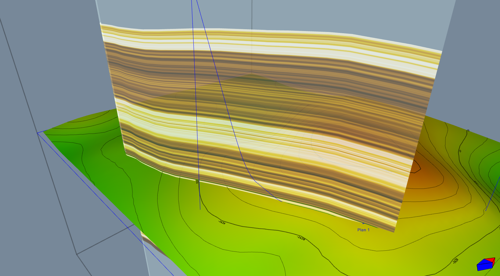
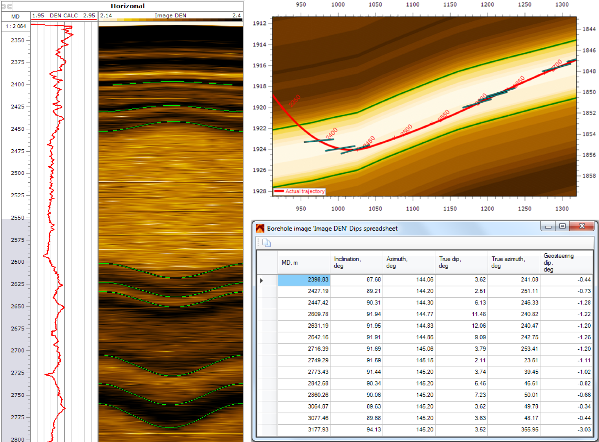
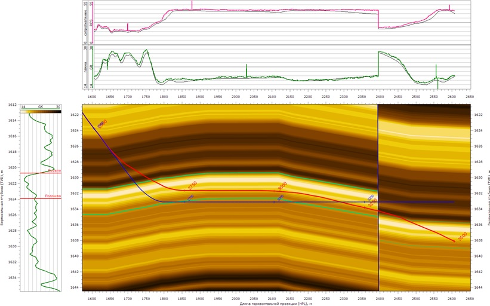
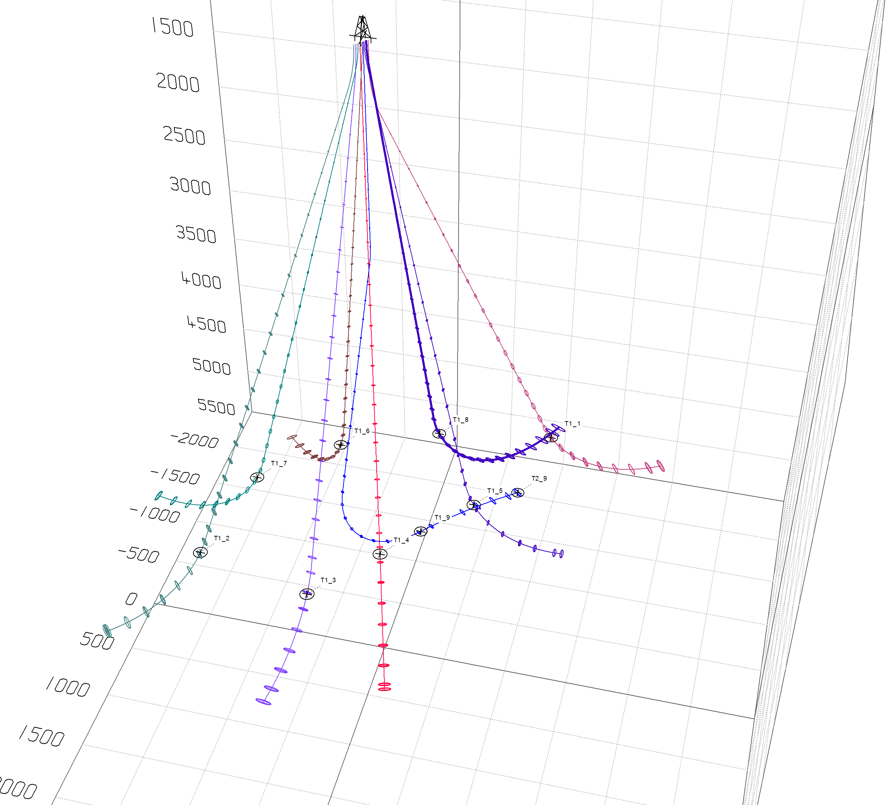
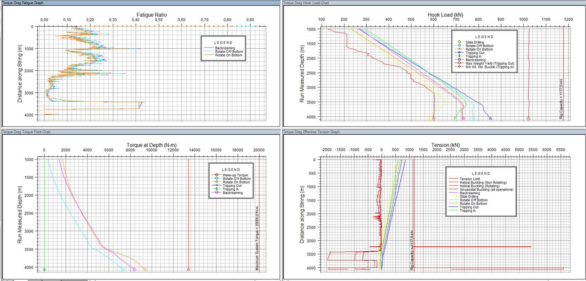

Программный комплекс « Office» предназначен для геонавигации горизонтальных скважин в режиме реального времени. В программе реализован метод корреляции синтетических и фактических кривых каротажа во время бурения, путем изменения геометрии структурных поверхностей разреза. Данный программный комплекс содержит в себе все необходимые геонавигатору инструменты, как для проводки горизонтального участка, так и для посадки скважины в пласт.
Основные отличительные особенности, подтвержденные отзывами наших Заказчиков:
Надежность. Программа исключительно надежна в эксплуатации, работает стабильно и без сбоев. Также во избежание возможных потерь данных и времени в процессе бурения скважины, вся загружаемая информация и любые изменения в проекте автоматически сохраняются в файл проекта. Таким образом, в случае внезапного выключения/перезагрузки компьютера или закрытия программы, пользователь не потеряет несохраненную работу.
Простота. Простота изучения и использования ПО позволяет полноценно внедрить его на предприятии в течении несколько часов. Некоторые наши Заказчики, с предыдущим опытом геонавигации, сумели полноценно освоить ПО в течении 1-2 часов, не обращаясь к руководству пользователя.
Скорость. За несколько минут можно создать и проработать альтернативный сценарий проводки скважины. Каждая из функций максимально нацелена на удобство и быстроту реализации, а уникальный интерактивный интерфейс позволяет гораздо быстрее и точнее подобрать значение нужного параметра (угол залегания, вертикаль или мощность пласта), чем при пошаговом перестроении кривых, когда искомый параметр подбирается дискретно.
Почему необходимо использовать синтетические кривые?
Как известно, вертикальная межскважинная корреляция становится неинформативной для геологического сопровождения бурения скважин при зенитных углах близких к 90°, когда траектория скважины практически параллельна залегающим пластам. Что, как правило, и наблюдается при бурении горизонтального участка скважины. Однако если пласт залегает не горизонтально, то проблемы с вертикальной корреляцией появляются уже на этапе посадки скважины в пласт. Это вызвано тем, что даже при небольших углах залегания пласта вертикальная проекция достаточно сильно искажается из-за влияния больших зенитных углов самой траектории скважины. Такое искажение приводит к значительным неопределенностям вертикальной корреляции перед входом в пласт, а во многих случаях к ошибочному выделению маркерных пропластков и неточной посадке. Таким образом, в условиях больших зенитных углов, вертикальная межскважинная корреляция становится неприменима, а наиболее эффективным решением задач посадки скважины в пласт и проводки горизонтального участка будет применение метода корреляции синтетических и фактических кривых каротажа.
Метод корреляции синтетических и фактических кривых каротажа.
Данный метод предполагает работу инженера с геонавигационным разрезом - вертикальным геологическим сечением вдоль плановой траектории скважины. Геометрия структурных поверхностей разреза задается на основании действующей геологической модели, либо создается вручную.
Затем данному разрезу задаются свойства, согласно ближайшей (наиболее репрезентативной) опорной скважине или пилотному стволу.Построенный таким образом разрез позволяет смоделировать ожидаемый отклик кривых каротажа в данных геологических условиях при бурении вдоль заданной траектории, такие кривые называются синтетическими кривыми каротажа.
Используя геонавигационный разрез и синтетические кривые до начала бурения, инженер по геонавигации прорабатывает различные сценарии поведения геологической структуры и анализирует поведение синтетических кривых каротажа в каждом из случаев. Например, как будут выглядеть кривые при выходе через кровлю, выходе через подошву, пересечении разлома и т.д. В результате такого анализа геонавигатор оценивает ожидаемые риски, а так же определяет оптимальный набор кривых каротажа во время бурения для успешной проводки скважины, согласно поставленным задачам.
Во время бурения, на треки геонавигационного разреза, в режиме реального времени, загружаются фактические кривые каротажа с приборов MWD/LWD, записываемые вдоль фактической траектории скважины (после загрузки фактической траектории, синтетические кривые автоматически перестраиваются вдоль нее). Таким образом, во время бурения, у инженера есть возможность сравнивать и коррелировать между собой фактические и синтетические кривые каротажа. Если на заданном участке бурения синтетические и фактические кривые совпадают, это говорит о том, что текущая модель верно отображает фактически пересекаемый геологический разрез. Если же кривые не совпадают, то текущая модель неверно отображает реально пересекаемый участок структуры и нуждается в корректировке (Рис. 2).
Корректируя структурные углы, а в определенных случаях, и мощности пропластков, инженер по геонавигации добивается приемлемой сходимости кривых и, исходя из обновленной структуры, выдает рекомендации по корректировке траектории бурения.
На данном рисунке показано, как изменение угла структуры на 0.3 град. позволило улучшить сходимость кривых ГК и УЭС на заданном интервале и, соответственно, получить более точную модель структуры для последующей корректировки траектории.Геонавигационный разрез. На верхнем треке отображена синтетическая кривая ГК вдоль плановой траектории скважины для заданного разреза.
Инженер по геонавигации также может определить проекцию на долото с помощью встроенного инструмента планирования.
Инструмент редактирования траектории.
Основные элементы и особенности программы
Поскольку главное предназначение данной программы - это работа в условиях дефицита времени для принятия решений в процессе бурения, то каждая из функций максимально нацелена на удобство и быстроту реализации.
Ниже перечислены некоторые из тех функциональных особенностей, которые делают программу эффективной и удобной в использовании.
База данных ПО представляет собой единый файл проекта, в котором хранятся все используемые при работе с конкретной скважиной данные. Наличие такого файла позволяет быстро передавать его по электронной почте (средний размер файла 3-7 МБ) коллегам и Заказчику в случае необходимости пересменки, или решения спорного вопроса.
Автоматическое сохранение базы данных. Во избежание возможных потерь данных и времени в процессе бурения скважины, вся загружаемая информация и любые изменения в проекте автоматически сохраняются в файл проекта. Таким образом, в случае внезапного выключения/перезагрузки компьютера или закрытия программы, пользователь не потеряет несохраненную работу. Так же существует возможность в любой момент создать резервную копию (точку отката) и, при необходимости, вернуться к ней.
Универсальный модуль импорта данных. Универсальный модуль позволяет импортировать траекторию скважины практически в любом текстовом или табличном виде без предварительного форматирования. Программа автоматически распознает нужные столбцы и загружает их в проект. Каротажные данные в формате LAS так же импортируются автоматически, с возможностью выбора нужных кривых.
Возможность загрузки структурных поверхностей из трехмерной геологической модели. Для создания структурных поверхностей на геонавигационном разрезе может использоваться функция импорта из трехмерной геологической модели. Поверхности загружаются в форматах CPS-3 grid или Irap classic grid.
3D вид структурной поверхности - до и после изменения. Красная зона показывает измененный участок.
Окно геонавигации в 3D
Планшет вертикальной корреляции скважин. В программе разработан полноценный инструмент для вертикальной корреляции скважин – «Планшет корреляции». Он позволяет отображать и форматировать каротажи опорных скважин, осуществлять работу с маркерами и межскважинную корреляцию.
Окно корреляции скважин
Интерактивное перестроение синтетических каротажей. При изменении геометрии поверхностей на разрезе, синтетические каротажи интерактивно перестраиваются одновременно с движением мыши. Это позволяет гораздо быстрее и точнее подобрать значение нужного параметра (угол залегания, вертикаль или мощность пласта), чем при пошаговом перестроении кривых, когда искомый параметр подбирается дискретно.
Работа с любыми кривыми каротажа. Программа работает абсолютно с любыми кривыми каротажа, которые могут быть представлены в формате LAS. Это может быть как каротаж во время бурения, так и данные ГТИ (шлам и газопоказания).
Работа с РИГИС. Наравне с построением геонавигационной модели по свойствам существует возможность построения двухмерной модели по РИГИС, и использовать эти данные в качестве синтетических и фактических РИГИС для геонавигации.
Модуль работы с азимутальными данными. В программе реализован полноценный модуль работы с азимутальными каротажами (имиджи), который позволяет в цифровом виде определять углы залегания породы как по отношению к буримой скважине, так и в абсолютных зачениях. Результат расчета наглядно отображается на геонавигационном разрезе для удобства перестроения модели.

Определение углов залегания на имидже и отображение углов на разрезе.
Загрузка данных в режиме реального времени по протоколу WITSML. Наравне со стандартной загрузкой данных посредством LAS файлов, в программе существует возможность загрузки данных с буровой в режиме реального времени по протоколу WITSML. Мы предлагаем собственное решение GoStream, также проверена работа с WITSML серверов Petroviser и Шлюмберже InterAct).
Геонавигация
Наша компания предоставляет сервис геологического сопровождения бурения (геонавигация) горизонтальных скважин и боковых горизонтальных стволов. Геонавигация скважин в процессе бурения организована по стандартам лидирующих сервисных и консалтинговых компаний отрасли. Как правило, сервис включает в себя посадку скважины в целевой пласт и навигацию горизонтального участка в целевом интервале.
Все работы выполняются в собственном программном обеспечении .
Что такое геонавигация?
Геонавигация - это процесс корректировки траектории скважины в режиме реального времени с целью увеличения проходки по наиболее продуктивной части пласта-коллектора. Решения по корректировке траектории основываются на анализе данных каротажа во время бурения (MWD/LWD) при помощи специализированного для геонавигации программного обеспечения.
Телеметрическое сопровождение бурения скважин – одна из передовых технологий, позволяющих максимально повысить производительность скважин. Контроль над скважиной в процессе бурения осуществляется в соответствии с показаниями каротажных приборов, для полноты картины подключаются еще и косвенные данные (например, шлам).
Геологическое сопровождение буровых работ осуществляется ежедневно в круглосуточном режиме (24/7). Два инженера по геонавигации в две смены по 12 часов осуществляют загрузку и обработку данных в специализированном программном комплексе и при необходимости выдают рекомендации по корректировке траектории скважины.
Для чего нужна геонавигация?
Погрешности и неопределенности, возникающие в процессе планирования и бурения скважин, приобретают критическое значение в случае горизонтальных скважин т.к. величина погрешности становится сопоставима с размерами целевого интервала, что приводит к высокому риску потери части или всего горизонтального ствола в неколлекторе. К таким погрешностям относятся в первую очередь вертикальная погрешность данных сейсмики, неопределённость по углу залегания структуры, а так же погрешности связанные непосредственно с процессом бурения и расчета траектории скважины: погрешности инклинометрии и расчета траектории скважины между точками замера.
Например, для горизонтальной скважины забоем 3000 – 3500м суммарная погрешность может доходить до нескольких метров по вертикали. Сопровождение бурения горизонтальных скважин позволяет свести к минимуму подобные риски, так же как сопровождение наклонно направленного бурения дает возможность наиболее точно рассчитать траекторию и скорректировать ее по ходу выполнения работ.

Синим выделена плановая траектория, красным - фактическая. На этом примере видно, как геонавигация скважины в пласте, изменяющим угол залегания от плановой модели на не более чем 0,6 градусов, позволило увеличить проходку по коллектору (NTG) с 35% до 92%.
Какие методы и измерения используются для геонавигации?
Основные два метода геонавигации отличаются по типам измерений, получаемых в процессе бурения:
Кривые каротажа. Геогавигация основана на сравнении фактических и синтетических кривых. Фактический каротаж получают с приборов LWD. Это могут быть кривые ГК, УЭС, нейтронной пористости, плотности или любой другой каротаж. Синтетический каротаж получают с соседних скважин.
Имиджи. Геонавигация основана на структурных углах, получаемых с имиджей приборов LWD. Обычно такими имиджами могут быть имиджи ГК, плотности и бокового каротажа. Зная угол по имиджу, инженер по геонавигации может лучше прогнозировать поведение структуры.
Геонавигация с имиджами позволяет понимать залегание структуры при одинаковом отклике кривых в кровле и подошве пласта.
Инжиниринг по бурению
Для эффективного контроля работы подрядных организаций, выполняющих бурение разведочных скважин на нефть и газ, а также для качественного и эффективного планирования работ компания ООО "" оказывает услуги по независимому инжинирингу по бурению скважин на нефть и газ любой сложности.
Инженерный расчет при бурении скважин выполняют инженеры по бурению скважин (well engineer) с опытом работы в данной области от 5-ти лет и выполнявшие работы для таких компаний как Shell, EXXON, ТНК-BP, Роснефть, ЛУКОЙЛ, Газпром. Мы анализируем все технические показатели, в том числе производим расчеты наклонно направленного бурения.
Мы не ограничиваемся рамками номенклатуры услуг, а направлены на комплексное решение проблем Заказчика.
Независимый подрядчик по инжинирингу
Процесс бурения требует комплексного подхода. Для наиболее качественного контроля за ним полезными окажутся услуги по инжинирингу. Независимая подрядная организация в этом случае обладает рядом ключевых преимуществ:
В отличии от интегрированного сервиса, разработка комплексных рекомендаций по бурению в компании "" направлена на техническое решение задач Заказчика и не ставит перед собой задачи продать определенное оборудование.
Роль независимого эксперта в случае споров поможет получить необходимое мнение третьего лица в случае оспаривания или расследования причин аварий и НПВ.
Наши эксперты по бурению выполняют весь спектр работ по инжинирингу строительства скважины:
Инженерные расчеты при бурении (расчеты конструкции скважин и профилей любой сложности, в том числе глубинное бурение)
Раскустовка месторождения и рекомендации по экономически выгодному порядку бурения скважин с учетом геологических целей, рисков пересечений, типа используемого в будущем оборудования для бурения данного куста и т.д.
Рекомендации по оптимальному с технической и экономической точек зрения размещению куста\направления движения станка (НДС) согласно целей
Выбор и расчет КНБК (подбор долота, нагрузки на инструмент, гидравлика и т.д.)
Расчет спуска обсадных колонн и хвостовика
Составление программ на крепление обсадных колонн и хвостовиков
Анализ истории разработки месторождения и подбор комплексных экспертных рекомендаций, применение аналитических методов расчета КНБК;
Оперативное инженерное сопровождение бурения
Это далеко не полный спектр оказываемых услуг. Решая проблемы Заказчика, мы можем разработать уникальную услугу / набор услуг для конкретного месторождения/Заказчика/скважины.

Рис.1 Раскустовка месторождений, выбор оптимального, с экономической точки зрения, порядка бурения скважин и направления движения станка (НДС) в зависимости от геологических целей
Fig.2 Расчет нагрузок и подбор КНБК и инструмента, на основе нагрузок, возникающих при бурении скважины.